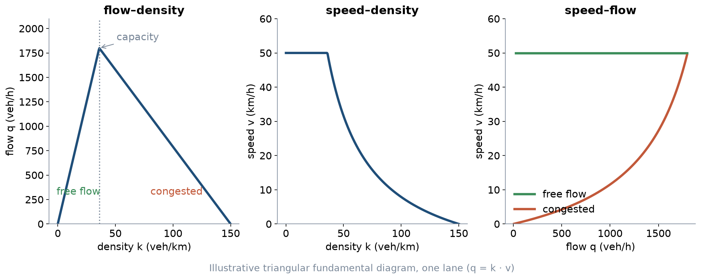
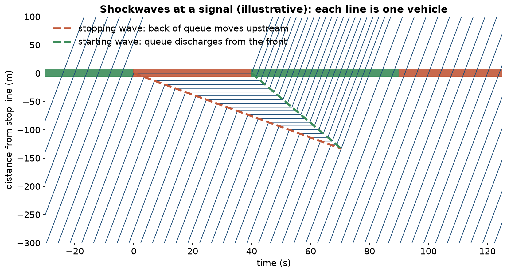
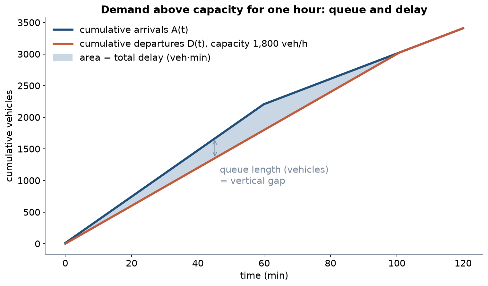
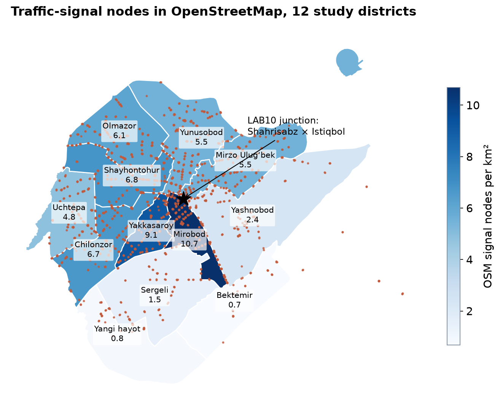

LEC19 · Urban Transport Systems Planning and Design · TSTU · Prof. J. Sodikov
1 / 25
What you will be able to do after today
Explain the speed–flow–density relationship and read a fundamental diagram
Use shockwaves and cumulative curves to explain queues and delay
Find the bottleneck that actually limits a corridor
Judge vehicle capacity alongside the quality of service for people
2 / 25
This lecture is about how traffic behaves on a street from minute to minute. You will read a fundamental diagram, which links speed, flow and density. You will use shockwaves and cumulative curves to explain how queues and delay grow. You will also learn to find the bottleneck that really limits a corridor, and to judge capacity for people as well as for vehicles.
Where this sits: the traffic-operations perspective
Traffic operations management is the fourth of the course's four design perspectives
Week 4 asked which links exist; Week 6 which services run; Week 9 how assets last
This week asks how the network performs minute by minute, and how control changes it
The open backbone: a published course on traffic flow theory and simulation, and Knoop's open textbook
3 / 25
The course's technical methods look at one transport system from four perspectives, and traffic operations management is the fourth. Week 4 asked which links exist, Week 6 which services run and Week 9 how assets last. This week asks how the network performs over minutes and how signal control changes that. The open material comes from a published course on traffic flow theory and simulation and from Knoop's open textbook.
Three variables, one identity
Flow q: vehicles passing a point per hour — what a counter measures
Density k: vehicles per kilometre of lane — what an aerial photo shows
Speed v: space-mean speed of the vehicles on the stretch
Identity: q = k · v holds for any stream in a stationary state
Detectors give time-mean speed; it is higher than space-mean speed — know which you have
4 / 25
Three variables describe a traffic stream. Flow q is the number of vehicles passing a point per hour, and density k is the number of vehicles per kilometre of lane. Speed v is their average speed along the stretch. In a steady state they are linked by q = k · v. Detectors measure the average speed at one point, which is higher than the average along the stretch, so note which one your data give.
The fundamental diagram

Illustrative triangle: free speed 50 km/h, capacity 1,800 veh/h per lane, jam density 150 veh/km.
5 / 25
The fundamental diagram shows how flow, density and speed relate for one lane. The figure uses an illustrative triangle: free speed 50 km/h, capacity 1,800 veh/h and jam density 150 veh/km. The flow–density panel is drawn first, and the speed–density and speed–flow panels follow from q = k · v. These values are for teaching only, not measurements from Tashkent.
Reading the fundamental diagram
Left branch: free flow — more vehicles, more flow, speed stays high
Peak: capacity, reached at the critical density
Right branch: congestion — more vehicles, less flow, lower speed
The same flow can occur in two states: a count alone cannot tell you which
After a queue forms, discharge flow is often below capacity (capacity drop)
6 / 25
On the left branch traffic flows freely: adding vehicles raises the flow while speed stays high. The peak is capacity, reached at the critical density. On the right branch the road is congested, so more vehicles give less flow and lower speed. The same flow can therefore occur in two different states, and a count alone cannot tell you which one you saw. Once a queue has formed, the outflow is often below capacity, which is called the capacity drop.
Worked example: how fast does a queue grow?
Shockwave speed between two states: w = (q₂ − q₁) / (k₂ − k₁)
Arrivals: q₁ = 900 veh/h at k₁ = 18 veh/km; stopped queue: q₂ = 0 at k₂ = 150 veh/km
w = (0 − 900) / (150 − 18) ≈ −6.8 km/h: the back of the queue moves upstream
That is about 1.9 m every second of red
When green starts, a second wave runs upstream and releases the queue
7 / 25
A shockwave is the boundary between two traffic states, such as free arrivals and a stopped queue. Its speed is the change in flow divided by the change in density, w = (q₂ − q₁) / (k₂ − k₁). With 900 veh/h arriving at 18 veh/km and a stopped queue at 150 veh/km, w ≈ −6.8 km/h. The minus sign means the back of the queue moves upstream, by about 1.9 m every second of red.
Shockwaves at a signal

Illustrative trajectories: 900 veh/h arrive, 40 s red, then green; queue stops where the two waves meet.
8 / 25
Each thin line in the figure is one vehicle moving through time towards the stop line. During the 40 s red, the stopping wave carries the back of the queue upstream. When green starts, a second wave runs upstream from the stop line and releases the queued vehicles. The queue reaches its greatest length where the two waves meet.
Bottlenecks
A bottleneck is where capacity falls: lane drop, merge, junction, bus stop in the lane, parked cars
Upstream: queue and congested state; downstream: free flow at the bottleneck's discharge rate
Only the active bottleneck limits throughput — widening elsewhere changes nothing
In cities the bottlenecks are almost always junctions and kerbside activity
Fixing one bottleneck can move the queue to the next one
9 / 25
A bottleneck is a place where capacity falls, such as a lane drop, a merge, a junction, a bus stop in the lane or parked cars. Upstream of it traffic queues, and downstream it flows freely at the rate the bottleneck lets through. Only the active bottleneck limits the corridor, so widening the road anywhere else changes nothing. In cities the bottlenecks are almost always junctions and kerbside activity, and fixing one can move the queue to the next.
Demand above capacity: queue and delay

Illustrative: 2,200 veh/h for one hour, then 1,200 veh/h, against a capacity of 1,800 veh/h.
10 / 25
The figure plots cumulative curves: the total number of vehicles that have arrived and that have left, against time. For one hour, 2,200 veh/h arrive, but only 1,800 veh/h can leave, so the two curves separate. The vertical gap between them is the queue, and the horizontal gap is the delay of one vehicle. The shaded area between the curves is the total delay of all vehicles.
Worked example: demand-to-capacity ratio
Demand 2,200 veh/h against capacity 1,800 veh/h: d/c = 1.22 for one hour
Queue grows by 400 vehicles per hour; after the peak it shrinks at 600 veh/h
The queue clears 40 minutes after the peak ends
Total delay = triangle area: ½ × 400 veh × 100 min = 20,000 veh·min
A 10% demand cut removes far more than 10% of the delay
11 / 25
Demand of 2,200 veh/h against a capacity of 1,800 veh/h gives a demand-to-capacity ratio of 1.22 for one hour. The queue grows by 400 vehicles in that hour, and afterwards it shrinks at 600 veh/h, so it clears 40 minutes after the peak. Total delay is the area of the triangle, ½ × 400 vehicles × 100 minutes = 20,000 vehicle-minutes. A 10% cut in demand removes much more than 10% of this delay, which is why demand management (Week 5) matters.
Capacity at a signalised junction
Saturation flow s: discharge rate of a queue during green, per lane
Capacity of a lane group: c = s × g / C (green time g, cycle C)
Degree of saturation: x = q / c — as x approaches 1, queues become unstable
Saturation flow is measured, not assumed: a published course assignment counts discharge headways
Lane width, buses, turning vehicles and pedestrians all lower s
12 / 25
Saturation flow s is the rate at which a queue leaves the stop line during green, per lane. A lane group only has green for part of the cycle, so its capacity is c = s × g / C. The degree of saturation x = q / c compares demand with that capacity, and queues become unstable as x approaches 1. Saturation flow should be measured in the field, not assumed. Lane width, buses, turning vehicles and pedestrians all lower it.
Worked example: measuring saturation flow
At the start of green, note the time each car crosses the stop line
Ignore the first four vehicles: they are still accelerating
Average headway of the rest, for example 2.0 s
s = 3,600 / 2.0 = 1,800 vehicles per hour of green, per lane
Repeat over at least five cycles and report the range, not one value
13 / 25
This worked example shows how to measure saturation flow at a real junction. At the start of green, record the time each car crosses the stop line, but ignore the first four cars because they are still speeding up. If the rest average a 2.0 s headway, s = 3,600 / 2.0 = 1,800 vehicles per hour of green per lane. Repeat over at least five cycles and report the range, not a single value.
Vehicle capacity is not the whole story
Question
Vehicle view
Multimodal view
Capacity
Vehicles per hour
People per hour, by mode
Delay
Seconds per vehicle
Seconds per person: passengers and pedestrians
Quality
Level of service letter from vehicle delay
Bus reliability, crossing waits, comfort, safety
Success
Lower degree of saturation
Objectives of Week 1: access, safety, emissions
14 / 25
The table compares a vehicle view of junction performance with a multimodal view. The vehicle view counts vehicles per hour, delay per vehicle and a level-of-service letter. The multimodal view counts people per hour by mode, delay per person for passengers and pedestrians, and bus reliability, crossing waits, comfort and safety. Success then means the Week 1 objectives of access, safety and emissions, not only a lower degree of saturation. In LAB10 you report both views.
Tashkent: what we know about traffic operations
OpenStreetMap signal data, the city's targets, and TSTU research
15 / 25
The second part of the lecture turns to Tashkent. It uses traffic-signal data from OpenStreetMap, the city's transport targets and research from TSTU.
Traffic signals in OpenStreetMap

1,867 signal nodes city-wide; 1,799 in the twelve study districts (OSM extract, October 2026).
16 / 25
The map shows how densely traffic signals are mapped in each study district of Tashkent. OpenStreetMap holds 1,867 signal nodes in the city, of which 1,799 lie in the twelve study districts. A darker district has more signal nodes per km². The star marks the junction used in LAB10.
Reading the signal map
Densest: Mirobod, 10.7 per km²; sparsest: Bektemir, 0.67 per km²
One junction carries several nodes: merged within 60 m they form 729 clusters
OSM records signal positions, not phases, timings or detectors
TSTU built a GIS inventory of Tashkent's signals (Sodikov et al., 2016) — the start of a signal register
17 / 25
Mirobod has the densest signal mapping, at 10.7 nodes per km², and Bektemir the sparsest, at 0.67 per km². One junction often carries several signal nodes, so the lab merges nodes within 60 m of each other, which gives 729 clusters. OpenStreetMap records only where signals stand, not their phases, timings or detectors. TSTU built a GIS inventory of Tashkent's signals in 2016, which could start a city register of signals.
Targets that pull in different directions
Tashkent transport concept for 2022–2025: junction vehicle capacity +15%
Same concept: average bus operating speed +17%
Same concept: public transport share 43%
No pedestrian target (Pulatova, 2024)
One junction cannot maximise all of them — the timing plan chooses
18 / 25
Tashkent's transport concept for 2022–2025 sets several targets at once. It aims to raise junction vehicle capacity by 15%, raise average bus operating speed by 17% and reach a 43% public transport share. Pulatova (2024) notes that it sets no target for pedestrians. One junction cannot reach every target, so the timing plan decides which users come first.
Pedestrians at Tashkent junctions
64.2% of surveyed pedestrians say they wait a long time to cross
21% say the time given to cross is not enough
Speed limit lowered from 70 to 60 km/h — still lethal at uncontrolled crossings
Long waits push people to cross on red: delay is also a safety problem
19 / 25
In Pulatova's survey, 64.2% of pedestrians say they wait a long time to cross, and 21% say the time given to cross is not enough. The thesis does not report the sample size. The city speed limit was lowered from 70 to 60 km/h, which is still lethal at crossings without signals. Long waits push people to cross on red, so pedestrian delay is also a safety problem.
At the city edge: the M-41 corridor
Entry corridors mix intercity, commuter and freight traffic
Sodikov et al. evaluated the M-41 traffic pattern and safety with mixed methods
Lesson: read traffic data and safety evidence together, not in separate reports
Operations analysis that ignores safety optimises the wrong thing
20 / 25
Entry roads at the city edge carry intercity, commuter and freight traffic together. Sodikov and colleagues studied the traffic pattern and safety of the M-41 corridor with mixed methods. Their lesson is to read traffic data and safety evidence together, not in separate reports. An analysis of operations that leaves out safety can optimise the wrong goal.
Data you will need to collect
No open traffic counts or signal timings exist for Tashkent
Classified counts by approach in 15-minute periods, including buses
Cycle and green times by stopwatch over several cycles
Queue length at the end of red; pedestrian counts at each crosswalk
Record date, time, weather and observer — Week 2 data-quality rules
21 / 25
No open traffic counts or signal timings were found for Tashkent, so you must collect your own. Count vehicles by type and approach in quarter-hour periods, and include buses. Time the cycle and the greens with a stopwatch over several cycles, and note the queue at the end of red and the pedestrians at each crosswalk. Record the date, time, weather and observer, as in Week 2, and observe only from safe points.
Discussion
At your corridor's busiest junction, is the bottleneck the signal, the kerbside, or the junction downstream — and how would you prove it?
Two minutes in pairs: name one observation that would settle it.
22 / 25
This question asks you to find what really limits your corridor's busiest junction: the signal, the kerbside or the next junction downstream. Look for something you can observe, such as where the queue starts and where free flow resumes. One clear observation can settle the question.
Key takeaways
q = k · v: a count alone cannot tell free flow from congestion
Queues grow and clear as waves; delay rises much faster than demand
Only the active bottleneck limits throughput — find it before designing
Report capacity and delay for people, not only for vehicles
23 / 25
A count alone cannot tell free flow from congestion, because the same flow occurs in two states. Queues grow and clear as waves, and delay rises much faster than demand. Only the active bottleneck limits throughput, so find it before you design. Report capacity and delay for people, not only for vehicles.
References
TU Delft, Department of Transport & Planning. CIEM6250 Transport Systems Design — units B-1 Network Design, B-2 Service Design, B-3 Physical Infrastructure Management, B-4 Traffic Operations Management (Smart Public Transport Lab education page; MSc Civil Engineering TTE track). https://www.tudelft.nl/citg/over-faculteit/afdelingen/transport-planning/research/labs/smart-public-transport-lab/education
TU Delft (2014). CIE4821 Traffic Flow Theory and Simulation. TU Delft OpenCourseWare. https://ocw.tudelft.nl/courses/traffic-flow-theory-simulation/
Knoop, V. L. (2021). Traffic Flow Theory: An Introduction with Exercises (3rd ed.). TU Delft OPEN Publishing. https://books.open.tudelft.nl/home/catalog/book/203
Salvucci, F. (2016). 1.252J/11.540J Urban Transportation Planning, Fall 2016. MIT OpenCourseWare. https://ocw.mit.edu/courses/1-252j-urban-transportation-planning-fall-2016/
Urbanik, T., et al. (2015). Signal Timing Manual (2nd ed.), NCHRP Report 812. Transportation Research Board. https://www.nap.edu/read/22097/chapter/2
Kittelson & Associates et al. (2013). Transit Capacity and Quality of Service Manual (3rd ed.), TCRP Report 165. Transportation Research Board. https://nap.nationalacademies.org/read/24766
Wilson, N., Sánchez-Martínez, G., & Nassir, N. (2017). 1.258J/11.541J Public Transportation Systems, Spring 2017. MIT OpenCourseWare. https://ocw.mit.edu/courses/1-258j-public-transportation-systems-spring-2017/
Global Designing Cities Initiative & NACTO (2016). Global Street Design Guide. Island Press. https://globaldesigningcities.org/publication/global-street-design-guide/
Sodikov, J. I., et al. (2016). GIS inventory of traffic signals on Tashkent streets (in Russian). Transport Systems of Siberia.
Pulatova, Z. S. (2024). Walkability assessment of Tashkent city districts (PhD dissertation, in Uzbek; supervisor J. I. Sodikov). Tashkent State Transport University.
Sodikov, J. I., et al. (2026). Traffic pattern and safety evaluation on the M-41 corridor using mixed-methods analysis. AIP Conference Proceedings (2025 Int. Conf.).